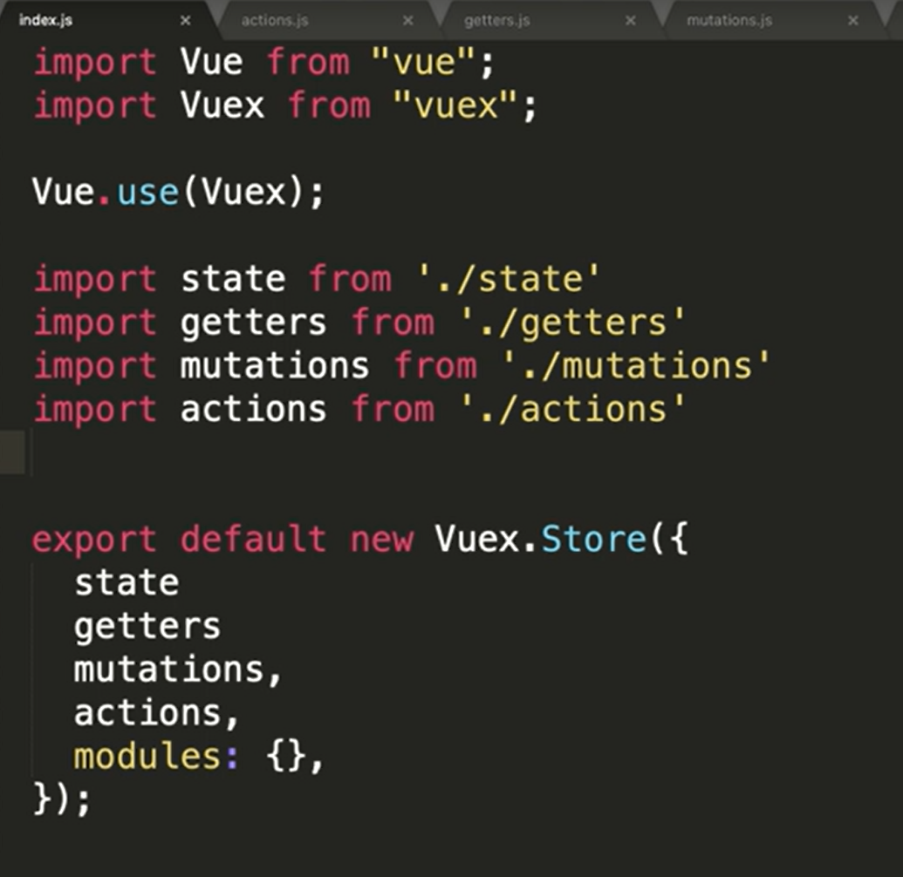

<!DOCTYPE html>


<html lang="zh-CN">
  

    <head>
      <meta charset="utf-8" />
        
      <meta name="description" content="小姚同学的学习笔记" />
      
      <meta
        name="viewport"
        content="width=device-width, initial-scale=1, maximum-scale=1"
      />
      <title>Vue-Vuex |  小姚同学今天学习了吗</title>
  <meta name="generator" content="hexo-theme-ayer">
      
      <link rel="shortcut icon" href="/favicon.ico" />
       
<link rel="stylesheet" href="/dist/main.css">

      
<link rel="stylesheet" href="/css/fonts/remixicon.css">

      
<link rel="stylesheet" href="/css/custom.css">
 
      <script src="https://cdn.staticfile.org/pace/1.2.4/pace.min.js"></script>
       
 

      <link
        rel="stylesheet"
        href="https://cdn.jsdelivr.net/npm/@sweetalert2/theme-bulma@5.0.1/bulma.min.css"
      />
      <script src="https://cdn.jsdelivr.net/npm/sweetalert2@11.0.19/dist/sweetalert2.min.js"></script>

      <!-- mermaid -->
      
      <style>
        .swal2-styled.swal2-confirm {
          font-size: 1.6rem;
        }
      </style>
    <link rel="alternate" href="/atom.xml" title="小姚同学今天学习了吗" type="application/atom+xml">
</head>
  </html>
</html>


<body>
  <div id="app">
    
      
    <main class="content on">
      <section class="outer">
  <article
  id="post-Vue-Vuex"
  class="article article-type-post"
  itemscope
  itemprop="blogPost"
  data-scroll-reveal
>
  <div class="article-inner">
    
    <header class="article-header">
       
<h1 class="article-title sea-center" style="border-left:0" itemprop="name">
  Vue-Vuex
</h1>
 

      
    </header>
     
    <div class="article-meta">
      <a href="/2022/05/13/Vue-Vuex/" class="article-date">
  <time datetime="2022-05-13T13:17:58.000Z" itemprop="datePublished">2022-05-13</time>
</a> 
  <div class="article-category">
    <a class="article-category-link" href="/categories/Vue/">Vue</a>
  </div>
  
<div class="word_count">
    <span class="post-time">
        <span class="post-meta-item-icon">
            <i class="ri-quill-pen-line"></i>
            <span class="post-meta-item-text"> 字数统计:</span>
            <span class="post-count">809</span>
        </span>
    </span>

    <span class="post-time">
        &nbsp; | &nbsp;
        <span class="post-meta-item-icon">
            <i class="ri-book-open-line"></i>
            <span class="post-meta-item-text"> 阅读时长≈</span>
            <span class="post-count">3 分钟</span>
        </span>
    </span>
</div>
 
    </div>
      
    <div class="tocbot"></div>


  
    <div class="article-entry" itemprop="articleBody">
       
  <h2 id="Vuex"><a href="#Vuex" class="headerlink" title="Vuex"></a>Vuex</h2><blockquote>
<p>Vuex： 状态管理（集中式存储管理应用的所有组件的状态）。</p>
</blockquote>
<h3 id="1-state"><a href="#1-state" class="headerlink" title="1 state"></a>1 state</h3><blockquote>
<p>用来放入数据。（类似于组件中的data）</p>
</blockquote>
<ul>
<li><p>数据获取方式1： </p>
<figure class="highlight plaintext"><table><tr><td class="gutter"><pre><span class="line">1</span><br><span class="line">2</span><br><span class="line">3</span><br><span class="line">4</span><br><span class="line">5</span><br><span class="line">6</span><br><span class="line">7</span><br><span class="line">8</span><br></pre></td><td class="code"><pre><span class="line">&lt;template&gt;</span><br><span class="line">  &lt;div class=&quot;about&quot;&gt;</span><br><span class="line">    &lt;h1&gt;This is an about page&lt;/h1&gt;</span><br><span class="line">        &lt;button @click=&quot;goF&quot;&gt;前进&lt;/button&gt;</span><br><span class="line">        &lt;!-- 使用 $store.state.xxx --&gt;</span><br><span class="line">        &lt;p&gt;Count:&#123;&#123;$store.state.count&#125;&#125;&lt;/p&gt;   </span><br><span class="line">  &lt;/div&gt;</span><br><span class="line">&lt;/template&gt;</span><br></pre></td></tr></table></figure>
<figure class="highlight js"><table><tr><td class="gutter"><pre><span class="line">1</span><br><span class="line">2</span><br><span class="line">3</span><br><span class="line">4</span><br></pre></td><td class="code"><pre><span class="line"><span class="attr">state</span>: &#123;</span><br><span class="line">  <span class="attr">count</span>: <span class="number">0</span>,</span><br><span class="line">  <span class="attr">num</span>:<span class="number">666</span></span><br><span class="line">&#125;, </span><br></pre></td></tr></table></figure></li>
<li><p>数据获取方式2：</p>
<figure class="highlight plaintext"><table><tr><td class="gutter"><pre><span class="line">1</span><br><span class="line">2</span><br><span class="line">3</span><br><span class="line">4</span><br><span class="line">5</span><br><span class="line">6</span><br><span class="line">7</span><br><span class="line">8</span><br><span class="line">9</span><br><span class="line">10</span><br><span class="line">11</span><br><span class="line">12</span><br><span class="line">13</span><br><span class="line">14</span><br><span class="line">15</span><br><span class="line">16</span><br><span class="line">17</span><br><span class="line">18</span><br><span class="line">19</span><br><span class="line">20</span><br><span class="line">21</span><br><span class="line">22</span><br></pre></td><td class="code"><pre><span class="line">&lt;template&gt;</span><br><span class="line">    &lt;div&gt;</span><br><span class="line">        &lt;h1&gt; Vuex &lt;/h1&gt;</span><br><span class="line"></span><br><span class="line">        &lt;p&gt;Count:&#123;&#123;count&#125;&#125;&lt;/p&gt; </span><br><span class="line"></span><br><span class="line">    &lt;/div&gt;</span><br><span class="line">&lt;/template&gt;</span><br><span class="line"></span><br><span class="line">&lt;script&gt;</span><br><span class="line">import &#123; mapState &#125; from &quot;vuex&quot;;</span><br><span class="line"></span><br><span class="line">export default &#123;</span><br><span class="line">    // 计算属性 另一种使用vuex中数据的方式</span><br><span class="line">    // 对state进行映射</span><br><span class="line">    computed: &#123;</span><br><span class="line">        ...mapState([&quot;count&quot;])  </span><br><span class="line">    &#125;,</span><br><span class="line">    methods:&#123; </span><br><span class="line">    &#125;</span><br><span class="line">&#125;</span><br><span class="line">&lt;/script&gt;</span><br></pre></td></tr></table></figure></li>
</ul>
<h3 id="2-getters"><a href="#2-getters" class="headerlink" title="2 getters"></a>2 getters</h3><blockquote>
<p>getters可以认为是store的计算属性。（类似于组件中的computed）</p>
</blockquote>
<figure class="highlight js"><table><tr><td class="gutter"><pre><span class="line">1</span><br><span class="line">2</span><br><span class="line">3</span><br><span class="line">4</span><br><span class="line">5</span><br><span class="line">6</span><br></pre></td><td class="code"><pre><span class="line"><span class="comment">// 计算属性</span></span><br><span class="line"><span class="attr">getters</span>: &#123;</span><br><span class="line">  <span class="title function_">result</span>(<span class="params">state</span>)&#123;</span><br><span class="line">    <span class="keyword">return</span> state.<span class="property">count</span> * state.<span class="property">num</span>;</span><br><span class="line">  &#125;</span><br><span class="line">&#125;,</span><br></pre></td></tr></table></figure>

<figure class="highlight plaintext"><table><tr><td class="gutter"><pre><span class="line">1</span><br><span class="line">2</span><br><span class="line">3</span><br><span class="line">4</span><br><span class="line">5</span><br><span class="line">6</span><br><span class="line">7</span><br><span class="line">8</span><br><span class="line">9</span><br><span class="line">10</span><br><span class="line">11</span><br><span class="line">12</span><br><span class="line">13</span><br></pre></td><td class="code"><pre><span class="line">&lt;script&gt;</span><br><span class="line">import &#123; mapState , mapGetters&#125; from &quot;vuex&quot;;</span><br><span class="line">export default &#123;</span><br><span class="line">    // 计算属性 另一种使用vuex中数据的方式</span><br><span class="line">    // 对state进行映射</span><br><span class="line">    computed: &#123;</span><br><span class="line">        ...mapState([&quot;count&quot;]),</span><br><span class="line">        ...mapGetters([&quot;result&quot;]),</span><br><span class="line">    &#125;,</span><br><span class="line">    methods:&#123;         </span><br><span class="line">    &#125;</span><br><span class="line">&#125;</span><br><span class="line">&lt;/script&gt;</span><br></pre></td></tr></table></figure>

<h3 id="3-mutations"><a href="#3-mutations" class="headerlink" title="3 mutations"></a>3 mutations</h3><blockquote>
<p>处理同步方法, 类似于组件中的methods.</p>
</blockquote>
<figure class="highlight js"><table><tr><td class="gutter"><pre><span class="line">1</span><br><span class="line">2</span><br><span class="line">3</span><br><span class="line">4</span><br><span class="line">5</span><br><span class="line">6</span><br><span class="line">7</span><br><span class="line">8</span><br><span class="line">9</span><br><span class="line">10</span><br><span class="line">11</span><br><span class="line">12</span><br><span class="line">13</span><br><span class="line">14</span><br><span class="line">15</span><br><span class="line">16</span><br></pre></td><td class="code"><pre><span class="line"><span class="comment">// 相当于methods 处理同步的方法</span></span><br><span class="line"><span class="attr">mutations</span>: &#123;</span><br><span class="line">  <span class="comment">// 每次+1 要把state传入，因为要操作，所以必须传入</span></span><br><span class="line">  <span class="title function_">add</span>(<span class="params">state</span>)&#123;</span><br><span class="line">    state.<span class="property">count</span>++;</span><br><span class="line">    <span class="comment">// 如果不写state 可以直接写成this.state.count 这种方式 获取参数</span></span><br><span class="line">    <span class="comment">// this.state.count++; </span></span><br><span class="line">  &#125;,</span><br><span class="line">  <span class="comment">// 传参</span></span><br><span class="line">  <span class="title function_">addFun</span>(<span class="params">state,num</span>)&#123;</span><br><span class="line">    state.<span class="property">count</span> += num;</span><br><span class="line">  &#125;,</span><br><span class="line">  <span class="title function_">reduce</span>(<span class="params">state</span>)&#123;</span><br><span class="line">    state.<span class="property">count</span>--;</span><br><span class="line">  &#125;</span><br><span class="line">&#125;,</span><br></pre></td></tr></table></figure>

<figure class="highlight plaintext"><table><tr><td class="gutter"><pre><span class="line">1</span><br><span class="line">2</span><br><span class="line">3</span><br><span class="line">4</span><br><span class="line">5</span><br><span class="line">6</span><br><span class="line">7</span><br><span class="line">8</span><br><span class="line">9</span><br><span class="line">10</span><br><span class="line">11</span><br><span class="line">12</span><br><span class="line">13</span><br><span class="line">14</span><br><span class="line">15</span><br><span class="line">16</span><br></pre></td><td class="code"><pre><span class="line">&lt;script&gt;</span><br><span class="line">import &#123; mapState , mapMutations , mapGetters&#125; from &quot;vuex&quot;;</span><br><span class="line"></span><br><span class="line">export default &#123;</span><br><span class="line">    // 计算属性 另一种使用vuex中数据的方式</span><br><span class="line">    // 对state进行映射</span><br><span class="line">    computed: &#123;</span><br><span class="line">        ...mapState([&quot;count&quot;]),</span><br><span class="line">        ...mapGetters([&quot;result&quot;]),</span><br><span class="line">    &#125;,</span><br><span class="line">    methods:&#123;</span><br><span class="line">        // 简便的调用方式 对mutations进行映射</span><br><span class="line">        ...mapMutations([&#x27;add&#x27;,&#x27;addFun&#x27;]) </span><br><span class="line">    &#125;</span><br><span class="line">&#125;</span><br><span class="line">&lt;/script&gt;</span><br></pre></td></tr></table></figure>

<h3 id="4-actions"><a href="#4-actions" class="headerlink" title="4 actions"></a>4 actions</h3><blockquote>
<p><code>Action</code>类似于<code>mutation</code>，<code>Action</code>提交的是<code>mutation</code>，而不是直接变更状态。<br><code>Action</code> <code>可以包含</code>任意异步操作, 可以处理异步方法。action更加容易调试。</p>
</blockquote>
<figure class="highlight js"><table><tr><td class="gutter"><pre><span class="line">1</span><br><span class="line">2</span><br><span class="line">3</span><br><span class="line">4</span><br><span class="line">5</span><br><span class="line">6</span><br><span class="line">7</span><br><span class="line">8</span><br><span class="line">9</span><br><span class="line">10</span><br><span class="line">11</span><br><span class="line">12</span><br><span class="line">13</span><br><span class="line">14</span><br><span class="line">15</span><br><span class="line">16</span><br><span class="line">17</span><br></pre></td><td class="code"><pre><span class="line"><span class="comment">// 处理异步的方法</span></span><br><span class="line"><span class="attr">actions</span>: &#123;</span><br><span class="line">  <span class="comment">// 延迟1s后count减一</span></span><br><span class="line">  <span class="title function_">reduceFun</span>(<span class="params"></span>)&#123;</span><br><span class="line">    <span class="built_in">setTimeout</span>( <span class="function">() =&gt;</span>&#123;</span><br><span class="line">      <span class="variable language_">this</span>.<span class="title function_">commit</span>(<span class="string">&#x27;reduce&#x27;</span>)</span><br><span class="line">    &#125;, <span class="number">1000</span>);</span><br><span class="line">  &#125;,</span><br><span class="line"></span><br><span class="line">  <span class="comment">// 形参 ， </span></span><br><span class="line">  <span class="title function_">reduceFun1</span>(<span class="params">&#123;commit&#125;</span>)&#123;</span><br><span class="line">    <span class="built_in">setTimeout</span>( <span class="function">() =&gt;</span>&#123;</span><br><span class="line">      <span class="title function_">commit</span>(<span class="string">&#x27;reduce&#x27;</span>)</span><br><span class="line">    &#125;, <span class="number">1000</span>);</span><br><span class="line">  &#125;</span><br><span class="line"></span><br><span class="line">&#125;,</span><br></pre></td></tr></table></figure>

<figure class="highlight plaintext"><table><tr><td class="gutter"><pre><span class="line">1</span><br><span class="line">2</span><br><span class="line">3</span><br><span class="line">4</span><br><span class="line">5</span><br><span class="line">6</span><br><span class="line">7</span><br><span class="line">8</span><br><span class="line">9</span><br><span class="line">10</span><br><span class="line">11</span><br><span class="line">12</span><br><span class="line">13</span><br><span class="line">14</span><br><span class="line">15</span><br><span class="line">16</span><br><span class="line">17</span><br><span class="line">18</span><br><span class="line">19</span><br><span class="line">20</span><br><span class="line">21</span><br><span class="line">22</span><br><span class="line">23</span><br><span class="line">24</span><br></pre></td><td class="code"><pre><span class="line">&lt;script&gt; </span><br><span class="line">import &#123; mapState , mapMutations , mapActions , mapGetters&#125; from &quot;vuex&quot;;</span><br><span class="line">export default &#123;</span><br><span class="line">    // 计算属性 另一种使用vuex中数据的方式</span><br><span class="line">    // 对state进行映射</span><br><span class="line">    computed: &#123;</span><br><span class="line">        ...mapState([&quot;count&quot;]),</span><br><span class="line">        ...mapGetters([&quot;result&quot;]),</span><br><span class="line">    &#125;,</span><br><span class="line">    methods:&#123;</span><br><span class="line">        // 简便的调用方式 对mutations进行映射</span><br><span class="line">        ...mapMutations([&#x27;add&#x27;,&#x27;addFun&#x27;]),</span><br><span class="line">        // 对actions进行映射</span><br><span class="line">        ...mapActions([&#x27;reduceFun&#x27;]),</span><br><span class="line">        add()&#123;</span><br><span class="line">            this.$store.commit(&#x27;add&#x27;);</span><br><span class="line">        &#125;,</span><br><span class="line">        // 有参传递</span><br><span class="line">        addNum(num)&#123;</span><br><span class="line">            this.$store.commit(&#x27;addFun&#x27;,num);</span><br><span class="line">        &#125;,</span><br><span class="line">    &#125;</span><br><span class="line">&#125;  </span><br><span class="line">&lt;/script&gt;</span><br></pre></td></tr></table></figure>

<ul>
<li><code>mapState</code>和<code>mapGetters</code>写在<code>computed</code>中；</li>
<li><code>mapMutations</code>和<code>mapActions</code>写在<code>methods</code>中。</li>
</ul>
<h3 id="5-modules"><a href="#5-modules" class="headerlink" title="5 modules"></a>5 modules</h3><blockquote>
<p>Vuex 允许我们将 store 分割成模块（module）。每个模块拥有自己的 state、mutation、action、getter、甚至是嵌套子模块——从上至下进行同样方式的分割。</p>
</blockquote>
<figure class="highlight js"><table><tr><td class="gutter"><pre><span class="line">1</span><br><span class="line">2</span><br><span class="line">3</span><br><span class="line">4</span><br><span class="line">5</span><br><span class="line">6</span><br><span class="line">7</span><br><span class="line">8</span><br><span class="line">9</span><br><span class="line">10</span><br><span class="line">11</span><br><span class="line">12</span><br><span class="line">13</span><br><span class="line">14</span><br><span class="line">15</span><br><span class="line">16</span><br><span class="line">17</span><br><span class="line">18</span><br><span class="line">19</span><br><span class="line">20</span><br><span class="line">21</span><br><span class="line">22</span><br></pre></td><td class="code"><pre><span class="line"><span class="keyword">const</span> moduleA = &#123;</span><br><span class="line">  <span class="attr">state</span>: <span class="function">() =&gt;</span> (&#123; ... &#125;),</span><br><span class="line">  <span class="attr">mutations</span>: &#123; ... &#125;,</span><br><span class="line">  <span class="attr">actions</span>: &#123; ... &#125;,</span><br><span class="line">  <span class="attr">getters</span>: &#123; ... &#125;</span><br><span class="line">&#125;</span><br><span class="line"></span><br><span class="line"><span class="keyword">const</span> moduleB = &#123;</span><br><span class="line">  <span class="attr">state</span>: <span class="function">() =&gt;</span> (&#123; ... &#125;),</span><br><span class="line">  <span class="attr">mutations</span>: &#123; ... &#125;,</span><br><span class="line">  <span class="attr">actions</span>: &#123; ... &#125;</span><br><span class="line">&#125;</span><br><span class="line"></span><br><span class="line"><span class="keyword">const</span> store = <span class="title function_">createStore</span>(&#123;</span><br><span class="line">  <span class="attr">modules</span>: &#123;</span><br><span class="line">    <span class="attr">a</span>: moduleA,</span><br><span class="line">    <span class="attr">b</span>: moduleB</span><br><span class="line">  &#125;</span><br><span class="line">&#125;)</span><br><span class="line"></span><br><span class="line">store.<span class="property">state</span>.<span class="property">a</span> <span class="comment">// -&gt; moduleA 的状态</span></span><br><span class="line">store.<span class="property">state</span>.<span class="property">b</span> <span class="comment">// -&gt; moduleB 的状态</span></span><br></pre></td></tr></table></figure>

<h2 id="Vuex目录文件管理"><a href="#Vuex目录文件管理" class="headerlink" title="Vuex目录文件管理"></a>Vuex目录文件管理</h2><ul>
<li>分离store中index.js的结构  </li>
</ul>
<p><br> </p>
 
      <!-- reward -->
      
      <div id="reword-out">
        <div id="reward-btn">
          打赏
        </div>
      </div>
      
    </div>
    

    <!-- copyright -->
    
    <div class="declare">
      <ul class="post-copyright">
        <li>
          <i class="ri-copyright-line"></i>
          <strong>版权声明： </strong>
          
          本博客所有文章除特别声明外，著作权归作者所有。转载请注明出处！
          
        </li>
      </ul>
    </div>
    
    <footer class="article-footer">
       
<div class="share-btn">
      <span class="share-sns share-outer">
        <i class="ri-share-forward-line"></i>
        分享
      </span>
      <div class="share-wrap">
        <i class="arrow"></i>
        <div class="share-icons">
          
          <a class="weibo share-sns" href="javascript:;" data-type="weibo">
            <i class="ri-weibo-fill"></i>
          </a>
          <a class="weixin share-sns wxFab" href="javascript:;" data-type="weixin">
            <i class="ri-wechat-fill"></i>
          </a>
          <a class="qq share-sns" href="javascript:;" data-type="qq">
            <i class="ri-qq-fill"></i>
          </a>
          <a class="douban share-sns" href="javascript:;" data-type="douban">
            <i class="ri-douban-line"></i>
          </a>
          <!-- <a class="qzone share-sns" href="javascript:;" data-type="qzone">
            <i class="icon icon-qzone"></i>
          </a> -->
          
          <a class="facebook share-sns" href="javascript:;" data-type="facebook">
            <i class="ri-facebook-circle-fill"></i>
          </a>
          <a class="twitter share-sns" href="javascript:;" data-type="twitter">
            <i class="ri-twitter-fill"></i>
          </a>
          <a class="google share-sns" href="javascript:;" data-type="google">
            <i class="ri-google-fill"></i>
          </a>
        </div>
      </div>
</div>

<div class="wx-share-modal">
    <a class="modal-close" href="javascript:;"><i class="ri-close-circle-line"></i></a>
    <p>扫一扫，分享到微信</p>
    <div class="wx-qrcode">
      
    </div>
</div>

<div id="share-mask"></div>  
  <ul class="article-tag-list" itemprop="keywords"><li class="article-tag-list-item"><a class="article-tag-list-link" href="/tags/Vue/" rel="tag">Vue</a></li></ul>

    </footer>
  </div>

   
  <nav class="article-nav">
    
      <a href="/2022/05/15/JS-fetch%E5%92%8Cfetch-mock/" class="article-nav-link">
        <strong class="article-nav-caption">上一篇</strong>
        <div class="article-nav-title">
          
            JS-fetch和fetch-mock
          
        </div>
      </a>
    
    
      <a href="/2022/05/12/Vue-%E6%80%A7%E8%83%BD%E4%BC%98%E5%8C%96/" class="article-nav-link">
        <strong class="article-nav-caption">下一篇</strong>
        <div class="article-nav-title">Vue-性能优化</div>
      </a>
    
  </nav>

  
   
    
    <script src="https://cdn.staticfile.org/twikoo/1.4.18/twikoo.all.min.js"></script>
    <div id="twikoo" class="twikoo"></div>
    <script>
        twikoo.init({
            envId: ""
        })
    </script>
 
</article>

</section>
      <footer class="footer">
  <div class="outer">
    <ul>
      <li>
        Copyrights &copy;
        2015-2022
        <i class="ri-heart-fill heart_icon"></i> Yaojm
      </li>
    </ul>
    <ul>
      <li>
        
      </li>
    </ul>
    <ul>
      <li>
        
        
        <span>
  <span><i class="ri-user-3-fill"></i>访问人数:<span id="busuanzi_value_site_uv"></span></span>
  <span class="division">|</span>
  <span><i class="ri-eye-fill"></i>浏览次数:<span id="busuanzi_value_page_pv"></span></span>
</span>
        
      </li>
    </ul>
    <ul>
      
    </ul>
    <ul>
      
    </ul>
    <ul>
      <li>
        <!-- cnzz统计 -->
        
        <script type="text/javascript" src='https://s9.cnzz.com/z_stat.php?id=1278069914&amp;web_id=1278069914'></script>
        
      </li>
    </ul>
  </div>
</footer>    
    </main>
    <div class="float_btns">
      <div class="totop" id="totop">
  <i class="ri-arrow-up-line"></i>
</div>

<div class="todark" id="todark">
  <i class="ri-moon-line"></i>
</div>

    </div>
    <aside class="sidebar on">
      <button class="navbar-toggle"></button>
<nav class="navbar">
  
  <div class="logo">
    <a href="/"></a>
  </div>
  
  <ul class="nav nav-main">
    
    <li class="nav-item">
      <a class="nav-item-link" href="/">主页</a>
    </li>
    
    <li class="nav-item">
      <a class="nav-item-link" href="/archives">归档</a>
    </li>
    
    <li class="nav-item">
      <a class="nav-item-link" href="/categories">分类</a>
    </li>
    
    <li class="nav-item">
      <a class="nav-item-link" href="/tags">标签</a>
    </li>
    
    <li class="nav-item">
      <a class="nav-item-link" href="/2021/about">关于我</a>
    </li>
    
  </ul>
</nav>
<nav class="navbar navbar-bottom">
  <ul class="nav">
    <li class="nav-item">
      
      <a class="nav-item-link nav-item-search"  title="搜索">
        <i class="ri-search-line"></i>
      </a>
      
      
      <a class="nav-item-link" target="_blank" href="/atom.xml" title="RSS Feed">
        <i class="ri-rss-line"></i>
      </a>
      
    </li>
  </ul>
</nav>
<div class="search-form-wrap">
  <div class="local-search local-search-plugin">
  <input type="search" id="local-search-input" class="local-search-input" placeholder="Search...">
  <div id="local-search-result" class="local-search-result"></div>
</div>
</div>
    </aside>
    <div id="mask"></div>

<!-- #reward -->
<div id="reward">
  <span class="close"><i class="ri-close-line"></i></span>
  <p class="reward-p"><i class="ri-cup-line"></i>请我喝杯咖啡吧~</p>
  <div class="reward-box">
    
    <div class="reward-item">
      
      <span class="reward-type">支付宝</span>
    </div>
    
    
    <div class="reward-item">
      
      <span class="reward-type">微信</span>
    </div>
    
  </div>
</div>
    
<script src="/js/jquery-3.6.0.min.js"></script>
 
<script src="/js/lazyload.min.js"></script>

<!-- Tocbot -->
 
<script src="/js/tocbot.min.js"></script>

<script>
  tocbot.init({
    tocSelector: ".tocbot",
    contentSelector: ".article-entry",
    headingSelector: "h1, h2, h3, h4, h5, h6",
    hasInnerContainers: true,
    scrollSmooth: true,
    scrollContainer: "main",
    positionFixedSelector: ".tocbot",
    positionFixedClass: "is-position-fixed",
    fixedSidebarOffset: "auto",
  });
</script>

<script src="https://cdn.staticfile.org/jquery-modal/0.9.2/jquery.modal.min.js"></script>
<link
  rel="stylesheet"
  href="https://cdn.staticfile.org/jquery-modal/0.9.2/jquery.modal.min.css"
/>
<script src="https://cdn.staticfile.org/justifiedGallery/3.8.1/js/jquery.justifiedGallery.min.js"></script>

<script src="/dist/main.js"></script>

<!-- ImageViewer -->
 <!-- Root element of PhotoSwipe. Must have class pswp. -->
<div class="pswp" tabindex="-1" role="dialog" aria-hidden="true">

    <!-- Background of PhotoSwipe. 
         It's a separate element as animating opacity is faster than rgba(). -->
    <div class="pswp__bg"></div>

    <!-- Slides wrapper with overflow:hidden. -->
    <div class="pswp__scroll-wrap">

        <!-- Container that holds slides. 
            PhotoSwipe keeps only 3 of them in the DOM to save memory.
            Don't modify these 3 pswp__item elements, data is added later on. -->
        <div class="pswp__container">
            <div class="pswp__item"></div>
            <div class="pswp__item"></div>
            <div class="pswp__item"></div>
        </div>

        <!-- Default (PhotoSwipeUI_Default) interface on top of sliding area. Can be changed. -->
        <div class="pswp__ui pswp__ui--hidden">

            <div class="pswp__top-bar">

                <!--  Controls are self-explanatory. Order can be changed. -->

                <div class="pswp__counter"></div>

                <button class="pswp__button pswp__button--close" title="Close (Esc)"></button>

                <button class="pswp__button pswp__button--share" style="display:none" title="Share"></button>

                <button class="pswp__button pswp__button--fs" title="Toggle fullscreen"></button>

                <button class="pswp__button pswp__button--zoom" title="Zoom in/out"></button>

                <!-- Preloader demo http://codepen.io/dimsemenov/pen/yyBWoR -->
                <!-- element will get class pswp__preloader--active when preloader is running -->
                <div class="pswp__preloader">
                    <div class="pswp__preloader__icn">
                        <div class="pswp__preloader__cut">
                            <div class="pswp__preloader__donut"></div>
                        </div>
                    </div>
                </div>
            </div>

            <div class="pswp__share-modal pswp__share-modal--hidden pswp__single-tap">
                <div class="pswp__share-tooltip"></div>
            </div>

            <button class="pswp__button pswp__button--arrow--left" title="Previous (arrow left)">
            </button>

            <button class="pswp__button pswp__button--arrow--right" title="Next (arrow right)">
            </button>

            <div class="pswp__caption">
                <div class="pswp__caption__center"></div>
            </div>

        </div>

    </div>

</div>

<link rel="stylesheet" href="https://cdn.staticfile.org/photoswipe/4.1.3/photoswipe.min.css">
<link rel="stylesheet" href="https://cdn.staticfile.org/photoswipe/4.1.3/default-skin/default-skin.min.css">
<script src="https://cdn.staticfile.org/photoswipe/4.1.3/photoswipe.min.js"></script>
<script src="https://cdn.staticfile.org/photoswipe/4.1.3/photoswipe-ui-default.min.js"></script>

<script>
    function viewer_init() {
        let pswpElement = document.querySelectorAll('.pswp')[0];
        let $imgArr = document.querySelectorAll(('.article-entry img:not(.reward-img)'))

        $imgArr.forEach(($em, i) => {
            $em.onclick = () => {
                // slider展开状态
                // todo: 这样不好，后面改成状态
                if (document.querySelector('.left-col.show')) return
                let items = []
                $imgArr.forEach(($em2, i2) => {
                    let img = $em2.getAttribute('data-idx', i2)
                    let src = $em2.getAttribute('data-target') || $em2.getAttribute('src')
                    let title = $em2.getAttribute('alt')
                    // 获得原图尺寸
                    const image = new Image()
                    image.src = src
                    items.push({
                        src: src,
                        w: image.width || $em2.width,
                        h: image.height || $em2.height,
                        title: title
                    })
                })
                var gallery = new PhotoSwipe(pswpElement, PhotoSwipeUI_Default, items, {
                    index: parseInt(i)
                });
                gallery.init()
            }
        })
    }
    viewer_init()
</script> 
<!-- MathJax -->

<!-- Katex -->

<!-- busuanzi  -->
 
<script src="/js/busuanzi-2.3.pure.min.js"></script>
 
<!-- ClickLove -->

<!-- ClickBoom1 -->

<!-- ClickBoom2 -->

<!-- CodeCopy -->
 
<link rel="stylesheet" href="/css/clipboard.css">
 <script src="https://cdn.staticfile.org/clipboard.js/2.0.10/clipboard.min.js"></script>
<script>
  function wait(callback, seconds) {
    var timelag = null;
    timelag = window.setTimeout(callback, seconds);
  }
  !function (e, t, a) {
    var initCopyCode = function(){
      var copyHtml = '';
      copyHtml += '<button class="btn-copy" data-clipboard-snippet="">';
      copyHtml += '<i class="ri-file-copy-2-line"></i><span>COPY</span>';
      copyHtml += '</button>';
      $(".highlight .code pre").before(copyHtml);
      $(".article pre code").before(copyHtml);
      var clipboard = new ClipboardJS('.btn-copy', {
        target: function(trigger) {
          return trigger.nextElementSibling;
        }
      });
      clipboard.on('success', function(e) {
        let $btn = $(e.trigger);
        $btn.addClass('copied');
        let $icon = $($btn.find('i'));
        $icon.removeClass('ri-file-copy-2-line');
        $icon.addClass('ri-checkbox-circle-line');
        let $span = $($btn.find('span'));
        $span[0].innerText = 'COPIED';
        
        wait(function () { // 等待两秒钟后恢复
          $icon.removeClass('ri-checkbox-circle-line');
          $icon.addClass('ri-file-copy-2-line');
          $span[0].innerText = 'COPY';
        }, 2000);
      });
      clipboard.on('error', function(e) {
        e.clearSelection();
        let $btn = $(e.trigger);
        $btn.addClass('copy-failed');
        let $icon = $($btn.find('i'));
        $icon.removeClass('ri-file-copy-2-line');
        $icon.addClass('ri-time-line');
        let $span = $($btn.find('span'));
        $span[0].innerText = 'COPY FAILED';
        
        wait(function () { // 等待两秒钟后恢复
          $icon.removeClass('ri-time-line');
          $icon.addClass('ri-file-copy-2-line');
          $span[0].innerText = 'COPY';
        }, 2000);
      });
    }
    initCopyCode();
  }(window, document);
</script>
 
<!-- CanvasBackground -->

<script>
  if (window.mermaid) {
    mermaid.initialize({ theme: "forest" });
  }
</script>


    
    

  </div>
</body>

</html>